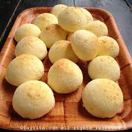

Croissant

Croissant es un bollo dulce con forma de media luna, elaborado con masa de pan o pasta de hojaldre.
Pan de yuca
Es una preparación popular que se disfruta en muchos lugares, ven y disfruta con nosotros.
Donas

Su textura, sabor y versatilidad de presentación hace que conquiste los paladares de todos en cualquier momento.
Pan de bono
Acompaña tus desayunos y meriendas